화면에서 TC 작성부터 실행 결과 확인까지
QA Control Center에서 Android·iOS 테스트를 준비하고 실행하는 방법입니다. 왼쪽 메뉴 이름과 버튼은 현재 밝은 UI를 기준으로 설명합니다.
주요 화면 이미지는 2026-10-02에 실제 대시보드를 1440px 너비로 열어 촬영했습니다. 실행 결과와 연결 상태를 그대로 보여 줍니다. 상태를 설명하기 위한 예시는 캡션에 따로 표시했습니다. 숫자·기기·스위트 이름은 사용 중인 환경에 따라 달라집니다. 이미지를 누르면 원본 크기로 볼 수 있습니다.
목차 열기
시작하기와 작업 경로 선택
처음 사용하는 사람은 환경 준비부터 진행하고, 기존 TC가 있는 사람은 자료의 형태에 맞는 메뉴에서 시작합니다. 이 가이드는 현재 제품의 화면과 구현된 동작을 기준으로 설명합니다.
첫 실행 준비
- 저장소를 내려받은 컴퓨터에 Python 가상 환경과
requirements.txt의 패키지를 설치합니다. 설치 명령과 운영체제별 준비는 온보딩을 참고합니다. - Android를 사용하면 Android SDK·ADB와 테스트할 에뮬레이터 또는 실기기를 준비합니다. iOS를 사용하면 Xcode와 시뮬레이터 또는 실기기를 준비합니다.
- TC 스튜디오에서 기획 정보로 초안을 만들려면 대시보드를 실행하는 계정에 Claude Code CLI(
claude)를 설치하고 로그인합니다. 모델은 서버 시작 시TCS_CLAUDE_MODEL(예:claude-opus-5-5)로 고정할 수 있고, 비우면 CLI 기본 모델을 씁니다. - Appium과 사용할 플랫폼의 드라이버를 준비합니다. 환경 설정에서 UiAutomator2(Android), XCUITest(iOS)의 설치 상태를 확인할 수 있습니다.
- 프로젝트 루트에서 아래 명령으로 제품 서버를 열고 http://localhost:8767에 접속합니다. 서버가 이미 실행 중이면 브라우저에서 바로 접속하세요.
.venv/bin/python agents/dashboard/serve.py대시보드 기본 포트는 8767, Appium은 4723입니다. 대시보드가 열린 것만으로 Appium이나 기기가 준비되는 것은 아닙니다. 환경 설정에서 서버와 기기를 각각 확인합니다.
어디에서 시작하나요?
| 현재 가진 자료 / 목적 | 시작 메뉴 | 다음 순서 |
|---|---|---|
| 엑셀로 작성한 TC | TC 스튜디오 → 엑셀 가져오기 | 매핑·미리보기 → 라이브러리 → Markdown 내보내기 → 파이프라인 |
| 기획 문서·화면 설계·요구사항 | TC 스튜디오 → 기획 정보 · 생성 | 자료 등록 → 초안 생성 → 검토·승인 → 내보내기 → 파이프라인 |
| 기기에 실행할 앱이 있고 화면으로 작성하고 싶음 | 화면 캡처로 작성 | 환경 확인 → 세션 시작 → 단계·검증 기록 → 저장 및 생성 → 빠른 실행 |
| TC Markdown이 준비됨 | 파이프라인 | 플랫폼·TC 폴더·기기 선택 → 코드 생성·린트·실행 |
| 생성된 Python 테스트를 다시 실행 | 빠른 실행 | 플랫폼·기기·폴더 선택 → 실행 → 증거·리포트 확인 |
| 실패 원인이나 과거 결과 확인 | 리포트 / 실행 기록 | 실행·TC·시도 확인 → 오류와 증거 비교 → TC 수정 후 재실행 |
용어와 저장 위치
| 용어 | 사용자가 알아야 할 의미 |
|---|---|
| TC / 스위트 / 시트 | TC는 하나의 테스트 케이스입니다. TC 스튜디오에서는 스위트와 시트로 TC를 묶어 관리합니다. |
| 그룹 / 폴더 | 실행할 TC를 묶는 폴더입니다. 내보내기에서 지정한 그룹과 실행 화면에서 선택한 폴더가 맞는지 확인합니다. |
| Markdown TC | 사전 조건·단계·기대 결과를 담는 입력 문서입니다. testcases/{platform}/{group}/에 저장합니다. |
| 생성 코드 | 기기를 조작하는 Python 테스트입니다. tests/generated/{platform}/{group}/에 저장하며 빠른 실행은 이 코드를 사용합니다. |
| Locator | 버튼·입력창 등 화면 요소를 찾는 조건입니다. 같은 조건에 여러 요소가 잡히면 원하는 요소를 가리키도록 수정합니다. |
| 시도 / 재시도 / 자동 복구 | 시도는 한 번의 테스트 수행입니다. 재시도는 실패한 테스트를 다시 수행하고, 자동 복구는 실패 원인 중 Locator 등을 수정하는 별도 단계입니다. |
| 리포트 / 증거 / 실행 기록 | 리포트는 저장된 HTML 결과, 증거는 시도별 영상·화면·로그, 실행 기록은 서버의 완료된 결과를 모아 보여 주는 실행 요약입니다. 저장 장소와 삭제 방법이 서로 다릅니다. |
TC 스튜디오에서 수정한 내용을 실행하려면 Markdown 내보내기 → 코드 생성까지 반영해야 합니다. 라이브러리의 내용만 바꾼 뒤 빠른 실행을 누르면 기존 생성 코드가 실행될 수 있습니다.
대시보드
최근 실행 현황과 Appium·기기 연결 상태를 확인하는 첫 화면입니다. 상단의 실행 상태를 펼치거나 왼쪽 메뉴에서 작업 화면으로 이동합니다.
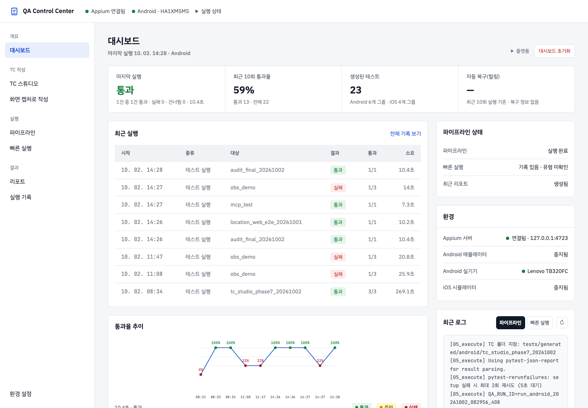
대시보드에서 실행 상태 읽기
- 제품 이름을 클릭하거나 왼쪽 대시보드 메뉴를 선택합니다. 상단의 Appium·기기 표시로 연결 상태를 먼저 확인합니다.
- 전체 / Android / iOS를 선택해 요약 범위를 정합니다. 최근 실행 결과, 통과·실패·건너뜀 수, 생성 테스트 수와 플랫폼별 그룹을 확인합니다.
- 통과율 추이는 실행별 통과율입니다. 누적 통과율은 기록된 통과 TC 수를 전체 TC 수로 나눈 값이며, 실행 기록 화면의 실행별 평균 통과율과 계산 방식이 다릅니다.
- 최근 실행 표는 서버에 저장된 최신 8건을 표시합니다. 더 오래된 실행은 실행 기록에서 확인하고, 개별 TC의 실제 결과·재시도·증거는 리포트 또는 빠른 실행 결과에서 확인합니다.
- 로그 영역에서 파이프라인 로그와 빠른 실행 로그를 전환합니다. 새로고침 버튼은 선택한 탭의 서버 로그를 다시 읽으며 아래에 갱신 시각 또는 실패 안내를 표시합니다. 빠른 실행은 마지막 실행 폴더의 로그를 표시합니다. 이전 기록에 서버 로그 정보가 없으면 저장된 로그라고 따로 안내합니다.
실행 시각·소요 시간·복구 횟수가 —이면 해당 요약에 정보가 없는 상태입니다. 연결 표시만으로 테스트 성공을 판단하지 말고 실제 실행 결과를 확인하세요. 상단 헤더에는 전체 실행 버튼이 없습니다.
대시보드 초기화 범위
대시보드 초기화를 누르고 확인하면 서버가 추적 중인 실행 프로세스에 종료를 요청하고 파이프라인 상태·파이프라인 로그를 초기화합니다. 모든 브라우저에 표시되는 서버 실행 기록과 현재 브라우저의 Android/iOS 빠른 실행 요약·로그도 지웁니다. 생성 테스트, HTML 리포트와 별도로 저장된 실행 증거는 유지됩니다.
초기화는 단순 새로고침과 다릅니다. 실행 상태를 다시 읽고 싶다면 같은 메뉴를 다시 선택하거나 브라우저를 새로고침하세요. 초기화 후에도 서버에 보관된 최근 증거는 빠른 실행에서 다시 표시될 수 있습니다.
TC 스튜디오
엑셀 TC를 가져오거나 기획 자료로 초안을 만들고, 검토한 TC를 라이브러리에서 관리합니다. 왼쪽 메뉴의 TC 스튜디오 또는 /tc-studio로 엽니다.
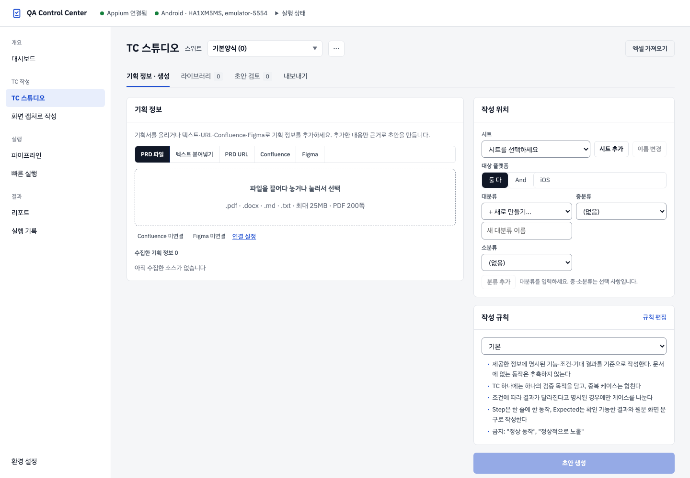
스위트와 네 작업 탭 이해하기
스위트는 함께 관리할 TC와 엑셀 양식의 묶음입니다. 상단 선택 상자의 이름과 괄호 안 TC 수를 확인하세요. 앱 스위트에서는 Android·iOS 대상과 결과를 따로 관리합니다. 다른 스위트로 바꾸면 목록 필터와 선택한 케이스가 초기화됩니다.
| 탭 | 하는 일 | 다음 단계 |
|---|---|---|
| 기획 정보 · 생성 | 자료 수집, 시트·분류·작성 규칙 선택, LLM 초안 생성 | 초안 검토 |
| 라이브러리 | 가져온 TC와 초안 검색·편집, 플랫폼별 결과 기록 | 초안 검토 또는 내보내기 |
| 초안 검토 | 원문 확인, 오류·중복 처리, 승인·반려 | 라이브러리 또는 내보내기 |
| 내보내기 | 검사한 엑셀 사본 내려받기 또는 파이프라인용 Markdown 반영 | 문서 공유 또는 파이프라인 |
기존 TC가 있다면 엑셀 가져오기로 시작합니다. 자료만 있다면 기본양식에서 시트·분류를 준비하고 생성합니다. 준비된 스위트가 없다는 안내가 보이면 빈 양식으로 시작을 누릅니다. 자료를 추가하는 것과 초안 생성을 누르는 것은 별도 작업입니다.
엑셀 가져오기: 파일 선택부터 반영까지
- 상단 엑셀 가져오기를 누르고 파일을 선택하거나 끌어다 놓습니다.
.xlsx만 지원하며 파일당 최대 25MB이고, 여러 파일을 함께 선택할 수 있습니다. 원본 파일은 변경하지 않습니다. - 양식 인식에서 기준 양식 자동 인식을 선택합니다. 대분류·기능·Test Step·Expected Result와 같은 헤더를 읽습니다. 인식된 시트별 행 수·헤더 행과 경고를 확인하세요.
- 스위트 이름을 확인합니다. 기존 스위트 이름을 쓰면 그 스위트에 합쳐질 수 있으므로 별도 묶음으로 만들지, 기존 묶음을 갱신할지 먼저 결정합니다. 이름은 영문·숫자·한글·밑줄·하이픈으로 작성하며 밑줄로 시작할 수 없습니다.
- 가져올 파일·시트만 체크하고 시트별 case_id 접두어를 확인합니다. 자동값은
S01,S02형태입니다. 영문 대문자로 시작하는 최대 8자의 영문 대문자·숫자를 사용하세요. - 변경 미리보기를 눌러 신규·갱신·동일·충돌·오류를 확인합니다. 내용 비교를 펼쳐 변경 전후 제목·단계·기대 결과·출처 등을 읽습니다.
- 필요한 행에 반영 또는 건너뛰기를 선택합니다. 충돌 행은 라이브러리 값 갱신 또는 건너뛰기를 결정해야 합니다. 오류 행은 건너뛰고 원본이나 매핑을 고쳐 다시 분석하세요.
- ○건 가져오기를 눌러 최종 반영합니다. 완료 안내의 추가·갱신·그대로 건수를 확인한 뒤 라이브러리에서 해당 스위트·시트를 엽니다.
다른 엑셀 양식과 열 매핑 프로필
“인식된 시트가 없습니다”가 나오거나 열을 다르게 쓰는 파일은 다른 양식 직접 매핑을 선택합니다. 열 번호 대신 A, B, AA처럼 엑셀 열 문자를 입력합니다.
| 입력 | 설명 |
|---|---|
| 헤더 행 | 열 이름이 적힌 행 번호. 첫 행이라면 1입니다. |
| 제목* · Step* · Expected* | TC 제목·테스트 단계·기대 결과의 필수 열입니다. 기본 입력값 B·C·D를 실제 파일에 맞게 바꿉니다. |
| 원본 TC ID · 태그 | 원본 식별자와 태그를 보존할 열입니다. 해당 열이 없다면 비웁니다. |
| 사전 조건 · 우선순위 | 파일에 있을 때 지정합니다. |
| 대분류 · 중분류 · 소분류 | 계층 분류 열. 대분류가 없으면 시트 이름을 사용합니다. |
- 열 문자를 입력하고 매핑 적용으로 파일을 다시 분석합니다. 입력만 바꾸면 이전 미리보기는 무효가 되며 바로 가져올 수 없습니다.
- 반복 사용할 양식은 이름을 입력해 새 프로필 저장합니다. 기존 프로필은 선택 후 선택 프로필 수정 또는 선택 프로필 삭제할 수 있습니다.
- 여러 파일·시트의 양식이 다르면 시트 옆 매핑 선택에서 해당 프로필을 고릅니다. 현재 공통 매핑은 대화창의 공통 설정을 사용합니다.
- 매핑·스위트·시트·접두어가 바뀌었으면 변경 미리보기를 다시 만들고 반영 내용을 확인합니다.
파일 분석 실패 시 확장자만 바꾼 파일이 아닌 실제 XLSX인지, 크기 제한과 헤더 행·필수 열이 맞는지 확인하세요.
기획 정보를 추가하는 다섯 방법
| 자료 탭 | 입력과 사용 방법 | 제한·확인 사항 |
|---|---|---|
| PRD 파일 | PDF·DOCX·Markdown·텍스트 파일을 선택하거나 끌어다 놓습니다. | 최대 25MB, PDF 최대 200쪽. 지원 확장자는 .pdf·.docx·.md·.txt입니다. |
| 텍스트 붙여넣기 | 본문을 붙여넣고 소스로 추가합니다. | 최대 1MB. 파일 전체가 필요 없을 때 관련 요구사항만 넣을 수 있습니다. |
| PRD URL | 공개 문서 주소를 입력하고 수집합니다. | 공개 HTTPS HTML·PDF·DOCX·Markdown·텍스트. 내부망 주소는 차단합니다. 로그인이 필요한 자료는 파일 또는 Confluence를 사용합니다. |
| Confluence | 페이지 주소를 넣고 수집합니다. | 연결 설정 필요. 하위 페이지 포함은 깊이 1, 최대 20개 범위입니다. |
| Figma | design 주소를 넣고 수집합니다. | 연결 설정 필요. node-id가 있으면 해당 프레임, 없으면 상위 프레임 최대 10개를 수집합니다. 수집된 화면 문구는 확인된 문구로 사용합니다. |
수집한 기획 정보에서 자료 제목·출처·문자 수·쪽 수·섹션 수를 확인합니다. 잘림·기타 경고가 있으면 원하는 부분이 포함됐는지 확인하고, 필요하면 파일을 나누거나 관련 본문을 따로 추가하세요. 소스 1개는 최대 400,000자까지 보관하며 초과하면 잘림 표시가 붙습니다. 필요 없는 자료는 소스 제거로 현재 묶음에서 뺍니다.
수집은 초안 생성과 다릅니다. 초안 생성은 LLM 작업을 시작하므로 자료와 작성 위치를 먼저 확인하세요. 원문은 검토의 근거이며 생성 결과의 정확성을 보장하지는 않습니다.
Confluence·Figma 연결 설정
- 연결 설정을 엽니다. Confluence는 base URL과 배포 유형을 입력합니다.
- Cloud (이메일+API 토큰)은 이메일·API 토큰을, Server/DC (개인 액세스 토큰)는 서버 base URL·개인 액세스 토큰을 사용합니다.
- Figma는 해당 파일을 읽을 수 있는 개인 액세스 토큰을 입력합니다.
- 저장 후 연결 상태 배지를 확인하고 수집할 페이지·파일로 돌아갑니다.
저장된 토큰은 다시 표시되지 않습니다. 토큰 칸을 비워 두면 기존 토큰을 유지합니다. 연결됨 배지가 보이더라도 특정 문서 권한이 없으면 수집에 실패할 수 있으므로, 주소·배포 유형·토큰 권한을 확인하세요. 인증 없이 읽을 수 없는 PRD URL은 여기 연결한 Confluence 탭이나 파일 업로드로 넣습니다.
작성 위치와 작성 규칙 준비
- 작성할 시트를 선택합니다. 시트 추가는 기존 양식의 서식을 복사한 빈 시트를 만들며, 이름 변경은 TC 내용과 ID를 유지한 채 시트 이름을 바꿉니다. 이름은 최대 31자입니다.
- 대분류를 선택하고 필요한 중분류·소분류를 고릅니다. 중·소분류는 선택 사항입니다. 새로운 분류는 + 새로 만들기…를 선택해 입력한 뒤 분류 추가합니다.
- 앱 스위트에서는 대상 플랫폼을 둘 다·And·iOS 중에서 고릅니다. 이 선택은 생성한 케이스와 플랫폼별 내보내기에 사용됩니다.
- 작성 규칙 프로필을 선택합니다. 기본 규칙은 제공 자료에 명시된 요구사항을 기준으로 쓰고, TC마다 검증 목적을 하나씩 담도록 안내합니다.
- 팀 문체가 필요하면 규칙 편집에서 아래 항목을 고친 뒤 이름을 입력해 저장합니다.
| 규칙 입력 | 사용법 |
|---|---|
| 저장할 프로필 이름 | 1~40자. 같은 이름으로 저장하면 그 프로필을 갱신합니다. |
| 규칙 | 한 줄에 하나씩 작성합니다. 예: “기대 결과에 버튼 이름과 전환된 화면을 적는다.” |
| 금지 표현 | 쉼표로 구분합니다. 기본에는 “정상 동작”, “정상적으로 노출” 같은 모호한 표현이 들어 있습니다. |
| Expected 끝맺음 | 허용할 끝맺음을 쉼표로 입력합니다. 비우면 끝맺음 검사를 하지 않습니다. |
| 엑셀에서 문체 가져오기 | 기존 TC 엑셀에서 제목·Step·Expected의 문체·끝맺음·기준 예시를 읽습니다. 자동으로 채운 규칙을 검토하고 저장합니다. |
같은 분류의 승인된 TC와 프로필의 기준 예시가 작성 참고로 들어갑니다. 참고 예시는 검증 결과가 아니라 문체의 기준입니다. 시트·대분류와 자료가 준비돼야 초안 생성이 활성화됩니다.
초안 생성 진행·실패·취소
초안 생성을 누르면 대기 → 수집 → 초안 작성 → 검증 → 완료 상태를 확인할 수 있습니다. 섹션 진행 수, 보존된 초안 수, 형식 오류 수와 표시된 비용을 함께 봅니다. 섹션마다 수 분 걸릴 수 있으며, 같은 스위트에 생성 작업이 진행 중이면 새 작업을 시작할 수 없습니다.
- 완료: 초안 검토로 이동하여 결과를 읽습니다. 완료 상태가 모든 TC의 승인·실행 성공을 뜻하지는 않습니다.
- 일부 섹션 실패: 원인과 로그를 확인합니다. 실패 섹션이 있을 때 실패한 섹션만 다시 생성으로 재시도하거나, 생성된 초안이 남았다면 살린 초안 검토로 이동합니다.
- 취소: 진행 중 취소를 누릅니다. 취소 전에 만들어진 초안은 남을 수 있으므로 보존된 초안 수를 확인합니다.
- 지난 작업: 다른 화면에서 돌아오면 저장된 작업 상태가 다시 보일 수 있습니다. 지난 작업 닫기는 진행 중 작업 취소와 구분해서 사용합니다.
해당 작업의 초안을 모두 승인 또는 반려하면 생성 화면의 입력 자료·작성 위치가 새 작업용으로 비워집니다. 이미 만든 초안의 원문 근거는 계속 조회할 수 있습니다.
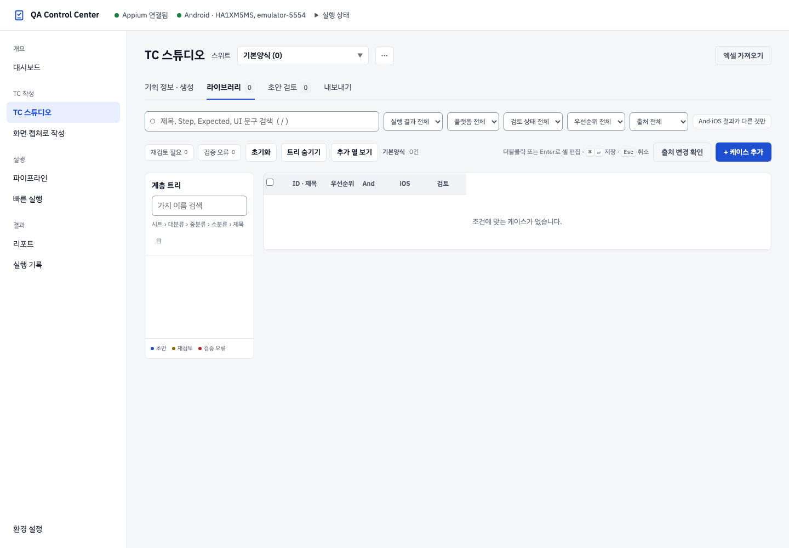
라이브러리 검색·계층 트리·필터
왼쪽 트리는 시트 › 대분류 › 중분류 › 소분류 › 제목 순서입니다. 가지를 누르면 펼침 상태와 해당 경로 필터가 바뀌며 같은 가지를 다시 누르면 경로 필터가 해제됩니다. 가지 이름 검색으로 트리만 좁히고, 모두 접기로 펼친 가지를 접습니다.
| 필터·도구 | 찾을 때 사용하는 기준 |
|---|---|
| 검색 | 제목·Step·Expected·UI 문구. 입력 칸 밖에서 /를 누르면 검색으로 이동합니다. |
| 실행 결과 전체 | 미실행·통과·실패·테스트 안 함·N/A. |
| 플랫폼 전체 / And·iOS 결과가 다른 것만 | 앱 스위트의 플랫폼 범위와 두 결과의 차이. |
| 검토 상태 전체 | 초안·승인·반려·재검토 필요·가져옴. |
| 우선순위 전체 / 출처 전체 | P0~P3·미지정, 엑셀·Confluence·Figma·파일 및 붙여넣기 출처. |
| 재검토 필요 / 검증 오류 | 출처 변경 관련 항목과 검증 오류가 있는 항목. |
| 초기화 | 현재 검색과 결과·상태·경로 등 필터를 해제합니다. TC는 삭제하지 않습니다. |
| 트리 숨기기 / 추가 열 보기 | 그리드를 넓히거나 중·소분류 등 추가 열을 표시합니다. |
검색·필터를 적용한 상태에서 편집을 저장하면 조건을 다시 적용합니다. 제목이나 결과가 조건과 달라지면 저장한 행이 현재 목록에서 사라질 수 있으며, 필터를 해제하면 다시 확인할 수 있습니다.
그리드에 보이는 케이스를 눌러 상세 패널을 엽니다. 목록이 길면 아래로 스크롤해 더 읽습니다. 결과·검토 상태·출처 변경 경고는 서로 다른 정보입니다.
TC 편집과 플랫폼별 결과 기록
그리드 셀은 더블클릭 또는 Enter로 편집하고 ⌘/Ctrl + Enter로 저장합니다. 셀 밖으로 초점을 옮겨도 저장을 시도합니다. Escape는 그 셀의 편집을 취소합니다. Step은 줄마다 1. …, 2. … 형식으로 입력하세요.
케이스 상세 → 편집에서는 제목·우선순위·사전 조건·단계·기대 결과·UI 문구·메모·태그를 수정합니다. 태그는 쉼표로 구분하고, 원본 TC ID는 읽기 전용입니다. 경로는 이동…에서 바꿉니다.
- 테스트 단계: + 단계 추가와 삭제 버튼을 사용합니다. 단계 입력에서 Enter는 다음 단계를 추가합니다. 끌어서 순서를 바꾸거나
Alt + ↑/↓로 이동할 수 있습니다. 빈 단계는 내용을 넣거나 지워야 저장됩니다. - 기대 결과: 실제로 확인할 화면·상태·문구를 적습니다. 모호한 표현에 안내가 나오면 구체화하세요.
- UI 문구: + 문구 추가 후 실제 화면/Figma에서 확인한 문구는 확인, 문서에만 있는 문구는 추정으로 표시합니다. 배지를 눌러 전환하며, 추정 문구가 남은 TC는 Markdown 내보내기에서 제외됩니다.
- 대상 플랫폼: 앱 스위트에서 And·iOS를 선택합니다. 최소 하나는 유지해야 합니다. 제외한 플랫폼은 N/A로 표시되며 해당 결과 입력이 비활성화됩니다.
- And 결과 / iOS 결과: 각각 미실행·통과·실패·테스트 안 함·N/A를 기록합니다. 일반 스위트는 하나의 실행 결과를 사용합니다. 결과를 선택하는 것은 라이브러리 기록 변경이며 기기에서 테스트를 실행하는 버튼이 아닙니다.
- 검토 상태: 작성한 TC는 변경할 수 있지만 엑셀에서 가져온 케이스의 검토 상태는 잠겨 있습니다. 가져온 TC의 제목·단계·결과 등 편집은 별도로 가능합니다.
변경 후 저장 또는 상세 패널의 ⌘/Ctrl + S를 누릅니다. 변경 취소는 저장 전 수정만 버립니다. 다른 케이스·스위트로 이동할 때 안내가 나오면 계속 편집·버리기·저장 중 선택하세요.
“다른 곳에서 먼저 바뀌었습니다”가 나오면 저장이 완료된 것으로 생각하지 마세요. 차이 비교 또는 최신 값 불러오기로 변경을 확인하고 다시 편집합니다.
케이스 추가·복제·일괄 작업·삭제
- 새 TC는 + 케이스 추가로 만들고 상세 패널에서 내용을 채웁니다. 복제는 선택 케이스 또는 상세 패널의 복제를 사용합니다. 복제본에는 새 ID가 붙고 초안 상태가 됩니다.
- 그리드 체크박스로 여러 케이스를 고릅니다. 헤더의 전체 선택은 현재 필터 결과 전체를 대상으로 합니다.
- 일괄 작업 바에서 실행 결과·검토 상태를 바꿉니다. 앱 스위트의 결과 변경은 Android 또는 iOS를 먼저 고릅니다. 선택 상자를 바꾸면 반영 요청이 바로 시작됩니다.
- 계층 이동…에서 새 경로를 고릅니다. 제목을 비우면 기존 제목을 유지하며, 채우면 대상 케이스의 제목도 바뀝니다.
- ⋯ 더보기에서 우선순위·복제·삭제를 사용합니다. 삭제는 확인 창에서 대상 건수를 확인한 후 진행합니다.
완료 안내에 다른 곳에서 바뀐 케이스 또는 가져온 케이스를 건너뛰었다는 메시지가 있으면 그 행을 다시 확인하세요. 가져온 케이스의 검토 상태는 일괄 작업으로도 바꾸지 않습니다.
출처 변경 확인과 개별 편집 이력
Confluence·Figma에서 만든 TC는 라이브러리의 출처 변경 확인으로 새 버전을 확인할 수 있습니다. 바뀐 출처가 있으면 배너와 재검토 필요 필터가 표시됩니다. 배너의 ○건만 보기로 관련 TC를 좁힙니다.
- 케이스를 열고 상세의 원문 탭에서 출처 정보와 변경 부분을 확인합니다. 이전 본문이 없으면 새 본문만 표시됩니다.
- 요구사항 변경을 반영할 필요가 있으면 편집에서 TC를 고치고 저장합니다. 원문 하이라이트는 작업 정보가 있는 초안 검토에서 확인할 수 있습니다.
- 확인을 마친 항목에서 변경 확인 완료를 누릅니다. 출처를 새 버전으로 맞추고 해당 재검토 표시를 해제합니다. 이 버튼이 TC 내용을 자동으로 수정하지는 않습니다.
- 개별 변경은 상세의 이력 탭에서 시각·변경 항목·전후 값을 확인합니다. 편집 이력의 되돌리기는 그 값을 이전 상태로 복원하며, 복원 작업도 이력에 남습니다.
출처 확인에 실패한 항목은 연결 설정·문서 권한을 확인하세요. “출처 모두 최신” 안내가 있어도 함께 표시되는 확인 실패 건수를 놓치지 마세요. 재검토 표시는 검토 상태와 별도로 표시될 수 있습니다.
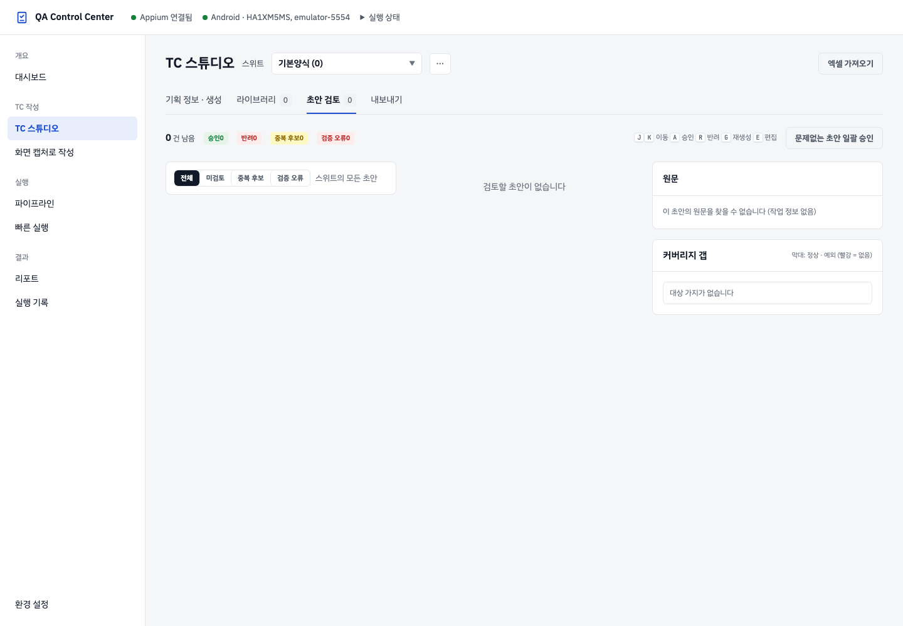
초안 검토: 원문·검증·중복·승인
- 초안 검토로 이동으로 해당 작업의 초안을 엽니다. 목록에서 TC를 고르면 원문 근거를 확인할 수 있습니다. 직접 검토 탭을 열었을 때는 스위트의 초안이 표시됩니다. 다른 초안 ○건 포함해 보기가 있다면 작업 외 초안도 함께 볼 수 있습니다.
- 전체·미검토·중복 후보·검증 오류 필터로 범위를 좁힙니다. 상단 탭 초안 수는 스위트 전체, 작업 화면의 남은 건수는 해당 작업 기준일 수 있습니다.
- 사전 조건·단계·기대 결과를 원문과 비교합니다. 추정 문구·문체 확인·인용 불일치 표시가 있으면 근거와 표현을 직접 확인합니다. Figma 자료가 있으면 원문 패널에서 프레임 이미지를 함께 볼 수 있습니다.
- 검증 오류가 있으면 편집 또는 재생성…으로 고칩니다. 오류와 미해결 중복이 있는 초안은 승인할 수 없습니다.
- 중복 후보는 기존 TC와 초안의 기대 결과를 비교한 뒤 아래 처리 중 하나를 선택합니다.
- 확인한 TC를 승인하거나 반려합니다. 직후 안내의 되돌리기는 초안 상태로 돌립니다.
| 중복 처리 | 결과 |
|---|---|
| 기존 케이스 갱신 | 기존 케이스를 초안 내용으로 갱신합니다. 현재 내용과 비교 후 사용하세요. |
| 건너뛰기 | 해당 초안을 반려합니다. |
| 새로 추가 | 중복이 아닌 것으로 표시합니다. 이어서 승인 여부를 결정합니다. |
문제없는 초안 일괄 승인은 검증 오류·미해결 중복·추정 문구·문체 경고가 없는 초안에만 적용합니다. 생성 결과가 모두 실제 앱과 일치한다는 보장은 아니므로 원문과 기대 결과를 읽은 뒤 사용하세요. 단건 승인과 Markdown 내보내기 조건은 다르며, 승인했어도 추정 문구가 남으면 Markdown 대상에서 제외됩니다.
재생성…은 작업에서 생성된 초안에 사용할 수 있습니다. 바꿀 내용을 메모로 입력하고 이 메모로 재생성을 누릅니다. 예: “배너 3개일 때와 5개일 때를 별도 TC로 나눠 주세요.” 이전 내용은 이력에 남습니다. 작업 정보가 없으면 재생성이나 원문 발췌 조회가 제공되지 않을 수 있습니다.
커버리지 갭은 작성 프로필을 기준으로 정상·예외·입력 유효성 TC의 부족한 부분을 보여 줍니다. 실행 통과율이 아닙니다. 더 생성은 생성 화면의 분류를 채워 주므로 부족한 요구사항을 설명하는 자료를 넣은 뒤 직접 생성하세요.
검토 목록에서는 J/K로 이동, A 승인, R 반려, G 재생성, E 편집을 사용할 수 있습니다. 입력 칸에서 타이핑할 때는 이 단축키가 적용되지 않습니다.
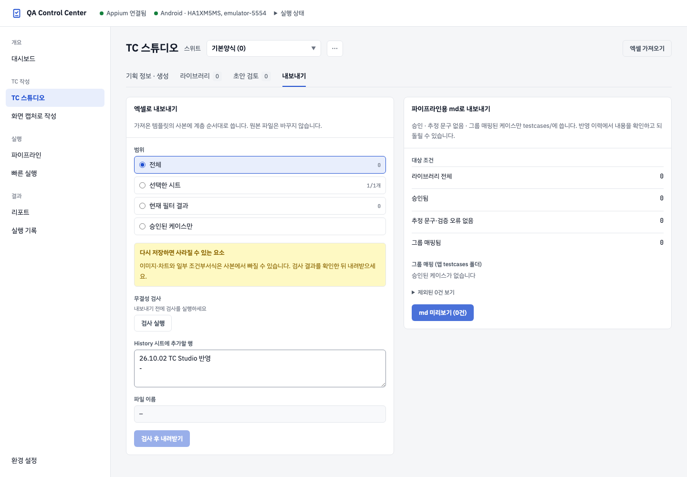
엑셀 내보내기: 범위·검사·다운로드
- 내보내기 → 엑셀로 내보내기에서 범위를 선택합니다.
- History 시트에 추가할 행에 변경 요약을 입력합니다. 원본에 History 시트가 없으면 내보내기 파일에 시트를 만들어 메모를 기록합니다.
- 검사 실행으로 양식 사본을 만들고 저장한 파일을 다시 읽어 검사합니다. 검사 항목과 파일 이름을 확인합니다.
- 내려받기 (○건)를 누르고 받은 파일을 확인합니다. 원본 엑셀은 변경되지 않습니다.
| 범위 | 포함되는 TC |
|---|---|
| 전체 | 현재 스위트의 전체 케이스. |
| 선택한 시트 | 체크한 시트만. 한 개도 선택하지 않으면 검사를 진행할 수 없습니다. |
| 현재 필터 결과 | 라이브러리에서 현재 검색·필터로 좁힌 케이스. |
| 승인된 케이스만 | 사람이 승인한 케이스. 엑셀에서 가져와 자동 승인된 케이스는 이 범위에서 제외됩니다. 가져온 TC도 포함하려면 전체·시트·필터 범위를 사용하세요. |
범위 또는 History 메모를 바꾸면 검사를 다시 실행해야 합니다. 이전 검사 결과로는 내려받을 수 없습니다. 검사 오류가 있어도 오류가 있지만 내려받기가 제공될 수 있으므로 검사를 통과한 것으로 생각하지 마세요. 이미지·차트와 일부 조건부서식은 사본에서 빠질 수 있습니다. 공유 전 중요한 서식·수식·행 수·플랫폼 결과가 맞는지 확인하세요. 양식이 없다는 안내가 나오면 사용할 엑셀을 먼저 가져옵니다.
파이프라인용 Markdown: 대상 조건·충돌·반영
파이프라인용 md로 내보내기는 내려받는 문서가 아니라 앱 실행용 TC 파일을 반영하는 작업입니다. 라이브러리 전체 → 승인됨 → 추정 문구·검증 오류 없음 → 그룹 매핑됨의 단계별 건수를 확인하세요.
- 제외 목록에서 미승인·검증 오류·추정 문구·그룹 매핑 없음 이유를 확인하고 라이브러리에서 해결합니다.
- 그룹이 없는 분류에 폴더명과 접두어를 입력하고 매핑 추가합니다. 폴더명은 영문·숫자·밑줄·하이픈을, 접두어는 대문자로 시작하는 2~8자의 영문 대문자·숫자를 사용합니다. 예:
settings,SET. - md 미리보기 (○건)를 누르고 케이스별 대상 파일·상태·이유를 확인합니다. 파일은 대상 플랫폼별
testcases/android/그룹/또는testcases/ios/그룹/에 반영됩니다. - 충돌은 건너뛰기 또는 라이브러리 값으로 덮어쓰기를 선택합니다. 선택하지 않은 충돌도 기본으로 건너뛰어 기존 파일을 보존합니다. 동일 파일이 이미 있는 경우 불필요한 새 파일로 생각하지 마세요.
- md 반영 후 실제 신규·갱신·건너뜀 집계와 결과 경로를 확인합니다. 표시된 플랫폼별 파이프라인 링크로 이동해 코드 생성·린트·실행 순서로 준비합니다.
미리보기의 TC 수와 대상 파일 수는 다를 수 있습니다. 두 플랫폼을 선택한 TC는 플랫폼별 파일이 만들어집니다. 미리보기 뒤 대상 파일이 변경됐다는 안내가 나오면 다시 미리보기를 만드세요.
이 작업 롤백은 이번 반영으로 추가한 파일을 제거하거나 갱신한 파일을 이전 내용으로 복원합니다. 반영 이후 그 파일을 수정했다면 보호를 위해 롤백이 거절됩니다. TC 라이브러리의 편집 내용까지 이전 상태로 되돌리는 버튼은 아닙니다.
가져오기 이력과 작업 단위 되돌리기
- 엑셀 가져오기 → 가져오기 이력에서 Excel → 라이브러리와 TC → md 작업을 찾습니다. 기존 Excel → md 작업이 남아 있으면 함께 표시될 수 있습니다.
- 스위트·시각·상태를 확인하고 내용 보기로 처리한 행과 변경 전후 내용을 확인합니다. 필요하면 새로고침을 누릅니다.
- 반영 완료 작업의 이 작업 되돌리기를 누릅니다. Markdown 작업에서는 제공되는 제외 목록 CSV도 확인할 수 있습니다.
스위트 삭제·백업·휴지통 복원
- 상단 스위트 이름을 확인하고 스위트 관리 (⋯) → 현재 스위트 삭제…를 엽니다.
- TC·시트 수와 삭제 범위를 확인합니다. 필요하면 엑셀로 백업 먼저 받기를 눌러 내보내기에서 전체 → 검사 실행 → 내려받기를 진행한 뒤 돌아옵니다.
- 스위트 삭제로 라이브러리 목록에서 제거합니다. TC·양식·변경 이력은 휴지통으로 이동하지만 이미 내보낸
testcases/파일과 원본 엑셀은 남습니다. - 실수했다면 삭제 직후 안내의 되돌리기를 누르거나 ⋯ → 삭제한 스위트에서 남은 보관 일수를 확인한 뒤 복원합니다.
기본양식은 삭제할 수 없습니다. 초안 생성이 진행 중인 스위트도 작업을 취소하거나 완료한 뒤 삭제해야 합니다. 삭제한 스위트는 30일 동안 보관되며 만료 후에는 복원할 수 없습니다.
같은 이름의 스위트가 이미 있으면 복원이 거절됩니다. 기존 스위트가 필요한 자료인지 먼저 확인하고 백업을 검토하세요. 영구삭제는 추가 확인의 영구삭제 확정을 눌러야 실행되며 복원할 수 없습니다.
화면 캡처로 작성
화면 캡처에서 실제 앱 화면과 UI 트리를 보며 동작을 기록하고, Locator를 검토한 뒤 TC를 저장합니다. 기획 문서로 작성하는 TC 스튜디오와 함께 사용할 수 있습니다.
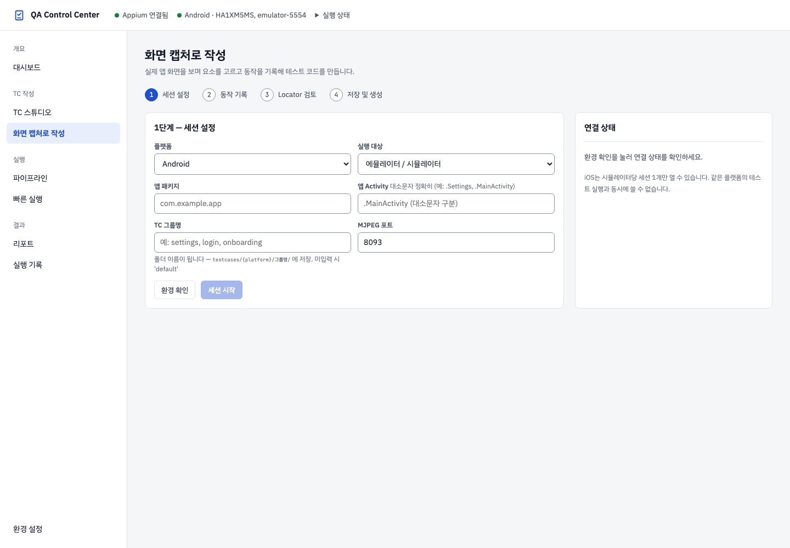
실행 대상 선택 정책
선택한 실행 대상의 종류를 자동으로 바꾸지 않습니다. 에뮬레이터·시뮬레이터를 선택한 상태에서 가상 기기가 꺼져 있어도 연결된 실기기로 대신 실행하지 않습니다.
| 선택한 대상 | 시작 조건 | 준비되지 않았을 때 |
|---|---|---|
| Android 에뮬레이터 | 실행 중인 Android 에뮬레이터 | 환경 설정에서 에뮬레이터를 시작한 뒤 다시 환경 확인 |
| iOS 시뮬레이터 | 부팅된 선택 시뮬레이터 | 환경 설정에서 해당 시뮬레이터를 부팅한 뒤 다시 환경 확인 |
| Android·iOS 실기기 | 해당 플랫폼의 연결된 실기기 | 기기 연결·신뢰·디버깅 설정을 확인하거나 실행 대상을 직접 변경 |
플랫폼이나 실행 대상을 바꾸면 환경 확인을 다시 진행합니다. 시작할 때 결정한 기기 ID는 앱 실행·미러링·기기 조작·재연결에서 유지합니다. 다른 대상으로 바꾸려면 기존 세션을 종료하고 새 대상으로 시작하세요.
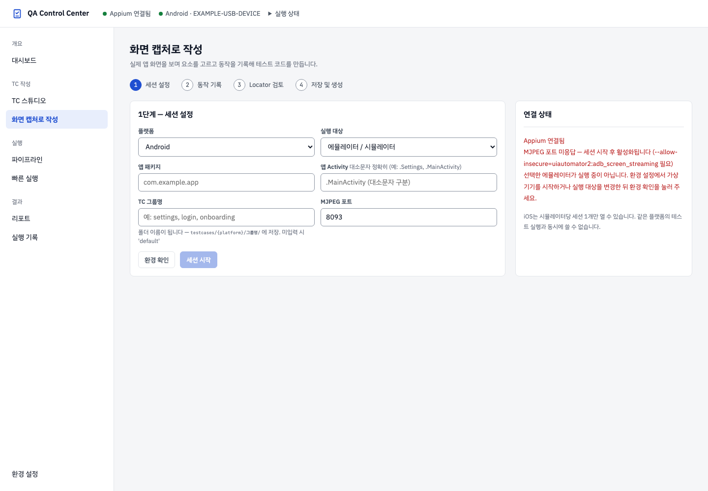
어떤 작업에 쓰나요?
화면 캡처로 작성은 연결된 앱의 화면과 UI 트리(Hierarchy)를 확인하면서 탭·입력·검증 단계를 작성하는 기능입니다. 화면의 진행 순서는 1 세션 설정 → 2 동작 기록 → 3 Locator 검토 → 4 저장 및 생성입니다. TC Markdown 저장과 Python 테스트 코드 생성은 별도 결과이므로 마지막에 두 결과를 모두 확인하세요.
앱은 선택한 기기에 미리 설치되어 있어야 합니다. 환경 설정에서 Appium과 기기를 준비하고, 같은 플랫폼의 파이프라인·빠른 실행이 끝난 뒤 시작하세요.
1단계 — 세션 설정 입력 항목
| 항목 | 입력과 선택 방법 | 확인할 점 |
|---|---|---|
| 플랫폼 | Android 또는 iOS를 선택합니다. | 플랫폼을 바꾸면 앱 정보와 기기 선택 항목이 바뀌며 환경 확인이 다시 필요합니다. |
| 실행 대상 | 에뮬레이터 / 시뮬레이터 또는 실제 디바이스를 선택합니다. | 가상 기기가 꺼졌다고 실기기를 대신 사용하지 않습니다. |
| 앱 패키지 — Android | 설치된 앱의 패키지 ID. 예: com.android.settings | 앱 이름이 아니라 패키지 ID를 입력합니다. |
| 앱 Activity — Android | 실행할 화면의 Activity. 예: .Settings, .MainActivity | 대소문자를 정확히 입력합니다. 앱마다 실제 Activity가 다릅니다. |
| Bundle ID — iOS | 설치된 앱의 Bundle ID. 예: com.apple.Preferences | 선택한 기기에 해당 앱이 설치되어 있어야 합니다. |
| 기기 이름 — iOS | 선택한 종류의 목록에서 사용할 기기를 선택합니다. | 시뮬레이터는 선택한 기기가 부팅되어 있어야 합니다. 같은 이름만 보지 말고 환경 설정의 기기 정보를 함께 확인합니다. |
| TC 그룹명 | settings, login 등 저장할 그룹명을 입력합니다. | testcases/{platform}/{그룹명}/ 폴더가 됩니다. 비우면 default를 사용합니다. |
| MJPEG 포트 — Android | 기본값 8093. 사용하는 스트림 포트에 맞춥니다. | 기기 선택과 별도인 미러링 설정입니다. 세션을 시작하기 전에는 포트가 아직 응답하지 않을 수 있습니다. |
Android 설정 화면에는 개별 기기 라디오 목록이 없습니다. 실행 대상 종류에 맞는 연결 기기를 확인하고 시작 시 결정된 기기 ID를 사용합니다. 여러 기기를 연결했다면 시작 후 상단의 기기 표시와 환경 설정의 연결 상태를 확인하세요.
환경 확인에서 세션 시작까지
- 플랫폼·실행 대상·앱 정보를 입력합니다. iOS에서는 사용할 기기 이름도 선택합니다.
- 환경 확인을 누릅니다. Appium 응답과 선택한 종류의 연결 기기를 확인합니다. Android에서는 MJPEG 포트 상태도 표시됩니다.
- Appium이 응답하고 선택한 종류의 기기가 연결되어 있으면 세션 시작 버튼이 활성화됩니다. MJPEG 포트 미응답만으로 시작이 막히지는 않습니다.
- 세션 시작을 누르면 기기 연결 상태를 다시 확인한 뒤 앱을 실행합니다. 앱 실행 진행 안내가 끝날 때까지 기다립니다.
- 작업 화면이 열리면 상단의 플랫폼·기기·그룹과 미러링 연결 상태를 확인하고 Hierarchy 새로고침으로 요소 트리를 읽습니다.
선택한 기기 ID는 앱 실행·기기 조작·스트림·재연결에 유지됩니다. 기존 세션의 플랫폼이나 대상을 바꾸는 방식으로 다른 기기에 연결하지 않습니다. 다른 기기로 작업하려면 기존 세션을 종료한 뒤 새 세션을 시작하세요.
2단계 — 작업 화면과 기기 조작
| 영역 | 사용법 | 결과 |
|---|---|---|
| 앱 미러링 | 현재 앱 화면을 확인합니다. 화면을 클릭하거나 드래그할 수 있습니다. | 클릭은 실제 기기에 탭을 전달하고, 드래그는 실제 스크롤을 전달합니다. 클릭 위치의 요소가 UI 트리에 있으면 해당 요소도 선택됩니다. |
| UI 트리 | 삼각형으로 자식 요소를 펼치고 요소 행을 선택합니다. | 선택 요소의 속성·화면 위치·Locator 후보와 스텝 추가 버튼을 확인합니다. |
| 선택 요소 상세 | Android의 resource-id·text·content-desc 또는 iOS의 name·label·type 등을 확인합니다. | 원하는 버튼이나 입력창인지 구분하고 Locator를 선택할 근거로 사용합니다. |
| 기록한 동작 | 추가한 단계의 순서와 각 단계의 기대 결과를 확인합니다. | 저장할 TC의 단계가 됩니다. 초기화는 확인 후 기록 목록을 비우며, 앱 화면을 처음 상태로 되돌리는 기능은 아닙니다. |
현재 화면은 요소를 선택해 단계를 명시적으로 추가하는 수동 작성 흐름입니다. 앱에서 한 모든 행동을 자동으로 완성된 TC로 기록한다고 가정하지 마세요. 화면 전환 감지는 UI 트리 갱신을 돕는 기능이며 TC 단계 자동 작성과는 다릅니다.
추가할 수 있는 단계와 검증
| 버튼 | 작성 방법 | 작성 중의 동작 / 테스트 실행 시의 의미 |
|---|---|---|
| 탭 | UI 트리에서 요소를 선택한 뒤 탭을 누릅니다. | 선택 요소를 누르는 TC 단계를 추가합니다. 작성 시에는 실제 탭을 실행하지 않습니다. |
| 입력 → 기록 | 입력창 요소를 선택하고 입력할 문자열을 적어 기록합니다. | 작성 시 기기에 문자를 보내지 않습니다. 실제 앱에서 직접 입력해 다음 상태를 확인하세요. 생성 테스트에서는 입력 요소를 비운 뒤 기록한 문자열을 입력합니다. |
| 검증 → 텍스트 확인 | 요소를 선택하고 확인할 텍스트를 입력합니다. | 향후 테스트에서 선택 요소의 텍스트에 입력한 문자열이 포함되는지 확인하는 단계를 추가합니다. 현재 화면에 대한 즉시 검증 결과가 아닙니다. |
| 검증 → 요소 존재 확인 | 확인할 요소를 선택합니다. | 향후 테스트에서 해당 요소가 표시되는지 확인합니다. |
| 검증 → 요소 없음 확인 | 사라져야 할 요소를 식별할 수 있는 상태에서 선택해 단계를 추가합니다. | 해당 단계 실행 시 요소를 찾을 수 없는지 확인합니다. 요소가 사라진 뒤에는 트리에서 선택할 수 없으므로 Locator를 확보할 시점을 고려하세요. |
| 뒤로 | 요소 없이 추가할 수 있습니다. | 단계를 추가하면서 실제 기기에 뒤로 동작도 전달합니다. |
| 아래로 / 위로 스크롤 | 요소 없이 방향을 선택합니다. | 단계를 추가하면서 실제 기기를 스크롤합니다. 완료 후 트리 갱신을 확인합니다. |
| 대기 | 초 단위 양수를 입력합니다. 소수도 사용할 수 있으며 최대 60초입니다. | 향후 테스트의 대기 단계를 추가합니다. 작성 화면을 그 시간만큼 자동으로 기다리는 버튼은 아닙니다. |
| 기대 결과 | 기록한 동작 아래에 사람이 확인할 결과를 입력합니다. | TC Markdown의 기대결과로 저장됩니다. 자유롭게 쓴 기대 결과 문장이 자동으로 실행 가능한 검증 코드가 되는 것은 아니므로 필요한 검증 단계를 별도로 추가하세요. |
3단계 — Locator 후보 검토·검증·승인
Locator는 실행할 때 원하는 요소를 찾는 식별 정보입니다. UI 트리에서 요소를 선택하면 후보가 표시됩니다. Android는 resource-id·accessibility-id·text·XPath, iOS는 accessibility-id·predicate string·XPath 후보를 볼 수 있습니다. 카드의 안정·보통·낮음과 5점 표시는 후보 추천 기준이며 실제 앱에서 항상 하나만 찾는다는 보증은 아닙니다.
- 실제 앱을 원하는 화면으로 이동시킨 뒤 Hierarchy 새로고침을 누릅니다.
- 목표 요소를 선택하고 속성과 미러링의 강조 위치가 맞는지 확인합니다.
- Locator 카드의 검증을 누릅니다. 마지막으로 읽은 UI 트리에서 몇 개가 일치하는지 확인합니다.
- 유일 (1개 매칭)이면 현재 트리에서 대상을 하나 찾은 것입니다. 0개이면 화면·트리를 갱신하고, 여러 개이면 다른 후보를 검토합니다.
- 사용할 후보를 결정했다면 승인 ✓을 누릅니다. 승인된 정보는 TC 저장 시 함께 저장됩니다. 검증과 승인은 별도 작업이므로 검증 결과를 읽고 결정하세요.
- 단계를 추가한 뒤 생성된 코드에서도 단계별 Locator가 의도한 요소를 가리키는지 확인합니다.
현재 UI의 WebView 선택 버튼은 비활성화되어 있습니다. 이 화면에서는 Native 트리를 중심으로 작성하세요.
4단계 — 미리보기, 저장 및 생성
- TC ID와 TC 제목을 입력합니다. 기록한 동작이 최소 한 개 있어야 저장할 수 있습니다.
- 기록 목록에서 순서와 기대 결과를 확인합니다. 필요한 검증 단계가 빠져 있으면 추가합니다.
- 미리보기로 Markdown과 Python 초안을 확인합니다. 미리보기의 Python은 설명용 초안이며 저장 후 생성되는 실제 코드와 다를 수 있습니다. 닫기 또는 Escape로 돌아옵니다.
- 저장 및 생성을 누릅니다. 먼저
testcases/{platform}/{그룹명}/{TC ID}.md에 TC를 저장하고, 이어서 기록한 동작으로 테스트 코드를 생성합니다. - 테스트 코드 생성 완료 안내와 생성 파일 경로를 확인합니다. 아래 생성된 테스트 코드 패널에서 실제 코드를 읽고 새로고침으로 해당 플랫폼의 가장 최근 생성 파일을 다시 확인할 수 있습니다. 여러 TC를 생성했다면 완료 안내의 파일 경로와 함께 확인하세요.
- Capture 세션을 정리한 뒤 빠른 실행에서 생성된 플랫폼·폴더를 선택해 실행합니다. 작성 또는 생성 완료는 테스트 통과를 의미하지 않습니다.
“TC 저장됨, 코드 생성 실패”라면 Markdown 저장과 코드 생성 중 앞 단계만 완료된 상태입니다. 생성 오류를 읽고 Locator·단계를 점검한 뒤 다시 생성 결과를 확인하세요. 오류 없이 저장됐다는 이유만으로 빠른 실행 준비가 끝났다고 판단하지 마세요.
저장 성공 시 서버의 Capture 세션은 비활성화됩니다. 작업 화면이 남아 있어도 연결 상태를 다시 확인해야 합니다. 다른 TC를 작성하려면 새 세션을 시작하고, 테스트 실행 전에는 세션 종료로 남은 연결을 정리하세요.
세션 복원·재연결·종료와 만료
| 상태 / 버튼 | 무엇을 하나요? | 권장 순서 |
|---|---|---|
| 메뉴로 다시 돌아옴 | 활성 세션의 플랫폼·대상·앱 정보와 서버에 남은 동작을 복원하고 드라이버 상태를 확인합니다. | 복원된 기기 표시와 기록 목록을 확인합니다. 수동 작성 중인 브라우저의 입력이 모두 영구 저장됐다고 가정하지 마세요. |
| 세션 재연결 | 동일 기기 ID로 Appium 앱 세션을 다시 실행하고 미러링·트리를 갱신합니다. | Appium과 해당 기기가 준비됐는지 확인합니다. 단순한 이미지 새로고침보다 큰 동작이며 앱 화면이 바뀔 수 있습니다. |
| 미러링만 재시도 | 미러링 연결만 다시 시도합니다. | 앱 연결이 살아 있고 화면만 끊겼을 때 사용합니다. |
| 이전 세션이 있지만 드라이버가 끊김 | 설정 화면에 앱 재실행과 새 세션 시작이 표시됩니다. | 같은 대상이면 앱 재실행, 다른 대상이나 처음부터 작성이면 새 세션 시작 후 환경 확인을 진행합니다. |
| 세션 종료 | 확인 후 Appium 연결을 종료하고 작성 화면의 기록을 비웁니다. | 필요한 TC를 저장한 뒤 종료합니다. 종료한 세션을 세션 재연결 버튼으로 그대로 되살리는 흐름은 아닙니다. |
| 30분 비활동 | 서버가 세션 비활동을 확인하면 세션을 비활성화합니다. | 만료되면 기기·Appium 상태를 확인하고 새 세션을 시작합니다. 화면을 열어 둔 것만으로 세션이 계속 유지되는 것은 아닙니다. |
MCP로 화면을 확인하고 기기를 조작하기
MCP를 지원하는 클라이언트에 현재 대시보드 서버의 /mcp 주소를 등록합니다. 기본 포트로 실행했다면 http://localhost:8767/mcp입니다. 대시보드 주소가 다르면 그 서버 주소를 사용하세요. 먼저 Capture 세션을 열고 앱이 실행된 상태인지 확인합니다.
| 도구 | 사용 목적 |
|---|---|
screenshot, hierarchy, screen_info | 현재 화면 이미지·UI 계층·세션 및 화면 정보를 확인합니다. |
device_tap, scroll, input_text, back | 선택된 기기를 실제로 조작합니다. 수동 스텝 추가 버튼과 달리 입력 도구도 기기에 문자를 전달합니다. |
generate_test_case | 서버에 기록된 동작으로 TC를 생성합니다. 브라우저에서만 추가한 미저장 수동 단계가 모두 포함된다고 가정하지 마세요. |
clear_actions | 서버의 기록한 동작 목록을 초기화합니다. 앱 화면을 초기화하는 도구는 아닙니다. |
“현재 화면과 UI 트리를 확인해 줘”, “검색 입력창에 Bluetooth를 입력해 줘”처럼 작업을 요청할 수 있습니다. 요청 내용을 실행하기 전에 대상 기기를 확인하세요. 활성 세션이나 일치하는 기기 연결이 없으면 session_not_active 안내를 확인하고 세션 상태를 먼저 해결합니다.
상단 MCP 연결됨 / 연결 대기 표시로 클라이언트 연결 상태를 확인합니다. 연결됨 표시를 누르면 확인 후 MCP 연결을 해제할 수 있습니다. 클라이언트가 다시 도구를 호출하면 재연결될 수 있으며, MCP 연결 해제와 Capture 세션 종료는 서로 다른 작업입니다.
Livetail에서 동작 출처와 결과 확인하기
세션 바의 Livetail을 눌러 이벤트 패널을 엽니다. 시간·동작 종류·요약·성공/주의/실패와 제공되는 경우 소요 시간을 확인할 수 있습니다.
- 사용자: 화면에서 전달한 사용자 동작 이벤트입니다.
- MCP: MCP 도구 호출에서 발생한 이벤트입니다.
- 파이프라인: 실행 단계에서 전달된 이벤트입니다.
출처 버튼을 눌러 해당 출처를 보이거나 숨깁니다. 위로 스크롤하면 새 이벤트가 와도 이전 내용을 읽을 수 있고, 하단으로를 눌러 최신 위치로 돌아갑니다. 내보내기는 현재 브라우저에 남아 있는 이벤트를 텍스트 파일로 내려받습니다.
자주 만나는 상태와 해결 순서
| 상태 | 확인과 해결 |
|---|---|
| 세션 시작이 비활성화됨 | 환경 확인 결과에서 Appium 응답과 선택한 종류의 연결 기기를 확인합니다. 가상 기기를 시작하거나 실기기 연결을 준비한 뒤 다시 환경 확인을 누릅니다. |
| 선택한 기기가 실행 대상과 일치하지 않음 | 플랫폼·실행 대상·기기를 다시 확인합니다. 기존 세션을 다른 종류로 바꿀 수 없으므로 기존 세션을 종료한 뒤 새로 시작합니다. |
| App Activity를 찾을 수 없음 | 대소문자와 실제 Activity를 확인합니다. 패키지 ID와 Activity가 서로 같은 앱의 정보인지 확인합니다. |
| 앱 실행 실패 / Bundle ID 오류 | 선택한 기기에 앱이 설치되어 있는지와 앱 식별자를 확인합니다. iOS의 WDA·XCUITest 준비 상태도 환경 설정에서 확인합니다. |
| 미러링 끊김 | 미러링만 재시도를 먼저 사용합니다. 앱 드라이버 연결도 끊겼다면 Appium·선택 기기를 확인하고 세션 재연결을 사용합니다. Android는 MJPEG 포트와 스트리밍 허용 설정도 확인합니다. |
| UI 트리가 없거나 이전 화면이 보임 | 앱 실행과 화면 전환이 끝난 뒤 Hierarchy 새로고침을 누릅니다. 트리가 없는 상태의 좌표 탭은 부정확할 수 있으므로 트리를 먼저 읽습니다. |
| Locator 0개 또는 여러 개 매칭 | 현재 화면의 트리를 다시 읽고 다른 후보를 검토합니다. 추천 점수보다 현재 대상 일치 여부를 먼저 확인합니다. |
| 저장할 기록이 없음 | 실제 앱만 조작한 상태인지 확인합니다. UI 트리에서 요소를 선택해 탭·입력·검증 등 TC 단계를 명시적으로 추가합니다. |
| TC는 저장됐지만 코드 생성 실패 | 실패 안내와 생성 패널을 확인합니다. 입력·Locator·검증 단계와 기존 동일 ID 파일을 점검하고 생성 완료까지 확인합니다. |
실기기 범위: Android·iOS 실기기를 대상으로 선택할 수 있으나 해당 기기의 연결·디버깅 또는 신뢰·개발 환경 준비가 필요합니다. iOS 실기기는 부팅된 시뮬레이터로 대체하지 않으며 WDA 기반 연결이 필요합니다. 기기 연결이 확인되었다고 앱 설치·WDA 서명·모든 Locator의 동작까지 확인된 것은 아닙니다.
작성 예시: 설정 앱에서 Bluetooth 검색
- 선택한 기기에 설치된 설정 앱의 식별자로 세션을 열고 UI 트리를 읽습니다. 앱 버전에 따라 검색창 위치·문구가 다를 수 있습니다.
- 검색 버튼 요소를 선택해 탭 단계를 기록합니다. 실제 앱에서도 검색창을 열고 트리를 다시 읽습니다.
- 검색 입력창 요소에서 입력 → Bluetooth → 기록을 사용합니다. 실제 앱에 Bluetooth를 직접 입력해 결과 화면을 준비합니다.
- 필요한 대기를 추가하고, 결과 요소를 선택해 검증 → 텍스트 확인으로 기대 문구를 기록합니다.
- 미리보기에서 단계 순서와 검증 내용을 확인하고 별도의 TC ID로 저장 및 생성합니다. 생성된 실제 코드에서 Locator를 확인한 뒤 세션을 종료하고 빠른 실행에서 생성된 폴더를 실행합니다.
- 최종 결과와 시도별 오류·증거를 확인합니다. 이 예시는 작성 방법이며 특정 기기에서의 통과 결과를 보장하지 않습니다.
파이프라인
TC Markdown을 입력으로 분석·코드 생성·린트 검사·테스트 실행을 진행하고 필요한 경우 자동 복구를 수행합니다. 준비된 단계만 개별로 실행할 수도 있습니다.
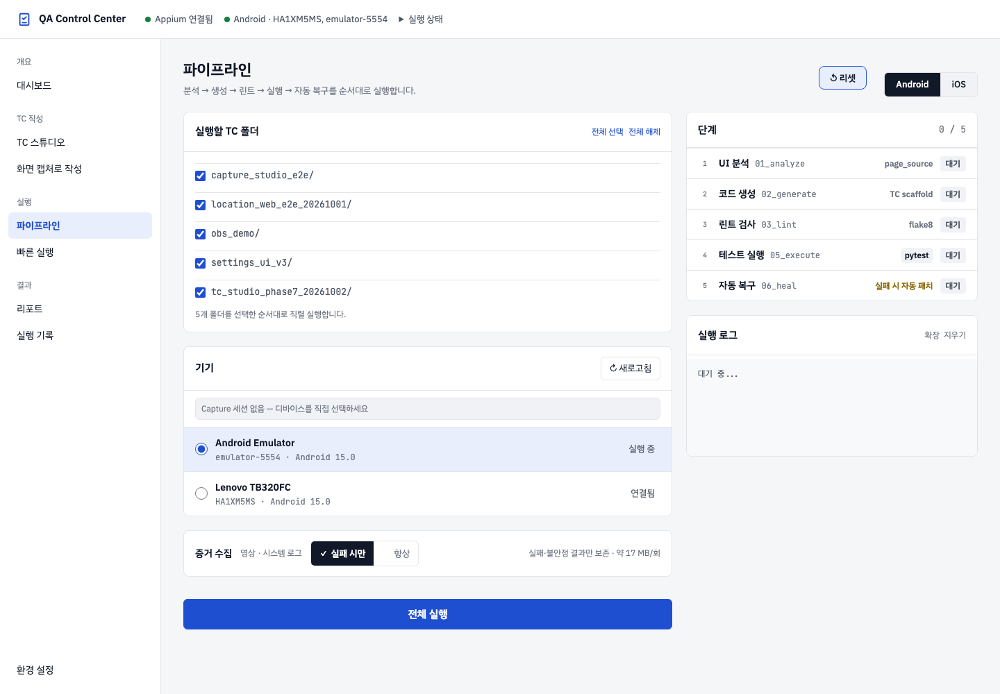
파이프라인 실행 전 설정
- 왼쪽 파이프라인을 열고 Android 또는 iOS를 선택합니다.
- 실행할 TC 폴더에서 실행할 Markdown TC 그룹을 체크합니다. 전체 선택 / 전체 해제로 일괄 변경합니다. 플랫폼 최상위 TC가 있으면 android (최상위) 또는 ios (최상위)로 표시됩니다.
- 기기의 라디오 버튼으로 연결된 대상 하나를 선택합니다. 목록이 오래되었다면 새로고침을 누르고 이름·종류·식별자를 다시 확인합니다. 연결되지 않은 항목은 선택할 수 없습니다.
- 증거 수집에서 실패 시만 또는 항상을 선택합니다. 이 선택은 빠른 실행과 공유되며 현재 브라우저에 저장됩니다.
- 전체 실행을 누릅니다. 선택한 폴더는 목록 순서대로 직렬 실행됩니다. 실행 중인 단계, 선택 폴더와 로그를 확인합니다.
파이프라인은 원본 TC에서 코드를 생성하는 흐름입니다. 이미 만들어진 코드만 실행하려면 빠른 실행을 사용하세요. 같은 플랫폼의 기기 선택은 파이프라인과 빠른 실행에서 공유됩니다. 선택 기기가 끊긴 뒤 목록을 갱신하면 다른 연결 후보가 선택될 수 있으므로 실행 직전에 다시 확인하세요.
각 단계와 TC 스튜디오 연결
| 단계 | 사용 목적과 확인 사항 |
|---|---|
| UI 분석 | 연결 기기의 화면 정보를 분석합니다. 기기·앱이 준비되어 있어야 합니다. 분석 실패 시 로그에서 앱 식별자, 연결 상태와 Appium 오류를 확인합니다. |
| 코드 생성 | 선택한 TC 원본을 실행 가능한 테스트 코드로 만듭니다. TC 문서의 사전 조건·단계·기대 결과를 먼저 확인합니다. |
| 린트 | 생성 코드의 문법·코드 품질 문제를 검사합니다. 실패하면 실행 전에 생성 코드와 생성 로그를 확인합니다. |
| 테스트 실행 | 생성된 TC를 실행하고 결과와 증거를 기록합니다. 로그의 통과·실패 수와 리포트의 TC별 결과를 확인합니다. |
| 자동 복구 | 실패 코드에 대한 복구 단계입니다. 복구가 앱 기능 오류를 해결하거나 최종 성공을 보장하지는 않습니다. 복구 후 결과와 각 시도를 비교합니다. |
TC 스튜디오에서 Markdown을 내보낸 뒤 제공되는 파이프라인 실행 링크를 따라오면 내보낸 플랫폼·폴더가 선택되고 UI 분석을 건너뛰어 코드 생성 → 린트 → 테스트 실행으로 진행합니다. 일반 메뉴에서 시작하는 전체 실행은 UI 분석부터 진행합니다.
단계 버튼은 선행 단계 완료 여부에 따라 활성화됩니다. 코드 생성과 린트는 Appium 없이 준비할 수 있으며, 린트는 코드 생성 완료 후 실행합니다. 개별 단계 실행은 체크된 TC 폴더 중 첫 번째 폴더를 대상으로 합니다. 여러 폴더를 처리하려면 전체 실행을 사용하세요.
취소·리셋·로그 지우기 구분
- 실행 중인 단계 옆 취소는 해당 단계 프로세스에 종료를 요청하고, 그 전체 실행에서 대기 중인 나머지 폴더도 중단합니다. 취소 후 단계 상태와 로그를 확인하세요.
- 파이프라인의 리셋은 확인 후 서버 실행 종료를 요청하고 단계 상태와 파이프라인 로그를 초기화합니다. 생성 테스트·리포트 파일은 유지됩니다.
- 로그 접기 / 펼치기는 화면 표시만 바꿉니다. 로그 지우기는 표시 내용을 비우며 테스트 결과 파일을 삭제하는 기능이 아닙니다.
- 실패 시 해당 단계의 로그를 읽고 환경·TC를 수정한 다음 필요한 단계부터 다시 실행합니다. 실행 도중 브라우저를 닫거나 다른 메뉴로 이동하는 것은 실행 중지 명령이 아닙니다.
Jira 최종 실패 보고
Jira 연동은 프로젝트의 Jira 설정이 활성화되고 서버 프로세스에 토큰이 제공되어 있을 때 파이프라인의 최종 실패 보고 경로에서 실행됩니다. 빠른 실행 실패나 모든 단계 오류가 자동으로 Jira에 등록되는 것은 아닙니다.
- 설정 담당자에게 Jira URL, 이메일, 프로젝트 키, 이슈 유형 ID와 토큰 환경변수(기본
JIRA_TOKEN) 설정을 확인합니다. 필요하면 버전과 Epic을 지정합니다. - 실패 항목별 이슈가 생성되며, 자동 첨부가 켜져 있고 파일이 남아 있으면 스크린샷과 실패 영상을 첨부합니다. 시스템 로그 자동 첨부는 제공하지 않습니다.
- 보고 실행 시 콘솔의
[jira] 이슈 생성, 비활성화·설정 미완료·생성 실패 메시지를 확인합니다. Jira 오류가 발생해도 테스트 결과는 유지됩니다.
중복 이슈 검색·기존 이슈 갱신 기능은 없으므로 같은 실패를 반복 보고하면 이슈가 다시 생성될 수 있습니다. Jira의 권한·인증·프로젝트 설정 문제를 해결한 뒤 기존 이슈와 중복 여부를 확인하세요.
빠른 실행
이미 생성된 tests/generated의 코드를 실행합니다. 분석·코드 생성·린트가 필요한 TC는 먼저 파이프라인에서 준비합니다.
빠른 실행 설정과 실행 순서
- 빠른 실행에서 Android 또는 iOS를 선택합니다. 이 화면은 선택 OS의
tests/generated에 이미 생성된 코드만 실행합니다. 실행 중에는 플랫폼을 바꿀 수 없습니다. - 기기를 선택하고 새로고침 후 선택 상태를 확인합니다. 연결이 끊기면 다른 연결 후보가 선택될 수 있습니다.
- 테스트 폴더 체크박스로 실행할 그룹을 정합니다. 전체 선택을 해제하면 모든 그룹이 해제됩니다. 폴더 옆 파일 수는 생성된 테스트 파일 수입니다.
- 증거 보존 정책과 자동 복구 건너뛰기를 정하고 테스트 실행을 누릅니다. 여러 폴더는 차례대로 실행합니다.
- 실행 로그를 확인하고 완료 후 표시되는 실행 ID·기기·통과/실패 수와 TC 결과를 확인합니다.
| 자동 복구 건너뛰기 | 실제 실행 방식 |
|---|---|
| 체크됨(기본) | 자동 복구와 pytest 자동 재시도를 사용하지 않고 TC를 한 번 실행합니다. 첫 실패를 그대로 확인할 때 사용합니다. |
| 체크 해제 | pytest 재시도 플러그인이 있으면 최대 2회 재시도하며 5초 대기합니다. 실행 프로세스가 실패하면 자동 복구 단계 후 다시 실행합니다. 최종 성공 여부와 이전 실패 시도는 증거에서 확인합니다. |
생성된 폴더가 없으면 TC 스튜디오·캡처에서 코드를 생성하거나 파이프라인을 실행한 뒤 다시 들어옵니다. 구버전 테스트 경고가 있으면 캡처에서 다시 저장·생성하세요. 원본 TC만 수정하고 빠른 실행하면 기존 코드가 실행될 수 있습니다.
증거 보존 정책
- 실패 시만: 실패·오류 시도의 증거를 보존합니다. 재시도된 시도도 보존하므로 재시도 후 통과 증거가 남을 수 있습니다. 첫 시도에 통과한 TC는 정책상 영상·로그·스크린샷이 없을 수 있습니다.
- 항상: 모든 시도의 증거를 보존합니다. 통과한 TC의 실제 화면과 로그를 비교할 때 사용하며 디스크 사용량이 늘어납니다.
- 보존 대상은 수집 가능한 영상·시스템 로그·스크린샷입니다. 정책을 선택해도 기기 지원·연결·수집 실패 때문에 파일이 없을 수 있습니다.
- Android와 iOS 시뮬레이터의 수집을 지원합니다. iOS 실기기 영상·시스템 로그 수집은 현재 지원하지 않습니다. 앱 Bundle ID가 없으면 iOS 로그 수집에 제한이 생길 수 있습니다.
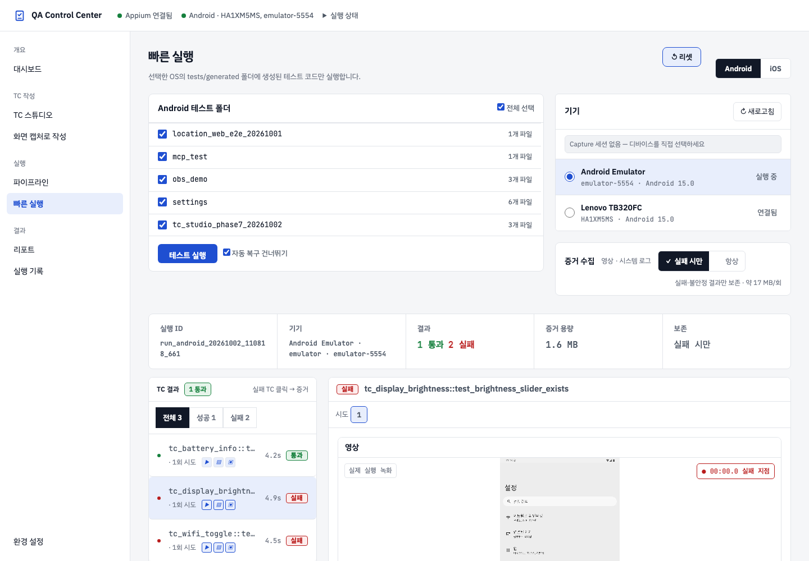
TC 결과·시도·영상·로그 읽기
- 결과 위쪽의 실행 ID와 기기를 확인하여 원하는 실행인지 판단합니다.
- 왼쪽 TC 결과에서 전체 / 성공 / 실패로 범위를 줄입니다. 페이지당 10개이며 이전 / 다음으로 이동합니다.
- TC를 클릭하면 오른쪽에 시도 번호가 표시됩니다. 기본은 마지막 시도입니다. 이전 실패를 조사하려면 이전 번호를 직접 선택합니다. FLAKY는 이전 실패·오류 뒤 마지막 시도가 통과한 경우입니다.
- 영상은 재생·일시정지·탐색 컨트롤로 확인합니다. 최종 실패 TC는 영상 준비 후 기록된 실패 지점으로 이동하므로 앞부분도 탐색해 원인을 확인합니다.
- 시스템 로그에서 검색어와 전체 / 오류 / 치명적 / AndroidRuntime / 앱 로그를 조합합니다. 앱 로그 버튼은 앱 식별자가 있을 때 표시됩니다. 화면은 최근 2,000줄을 대상으로 필터링하므로 전체 실행의 모든 로그를 보여주는 것은 아닙니다.
- 스크린샷에서 실행 화면을 확인하고, TC 내용에서 관련 사전 조건·동작·기대 결과를 읽습니다. 원본 파일을 찾지 못하면 해당 영역에 오류가 표시됩니다.
형식이 인식되는 로그는 시간·레벨·프로세스/태그·메시지로 표시됩니다. Android의 V/D는 상세·디버그, I는 정보, W는 경고, E/F는 오류·치명적 수준입니다. iOS도 인식된 레벨에 따라 색이 표시됩니다. 오류와 치명적 버튼은 오류·예외·크래시 문자열을 포함하는 줄을 찾는 검색 프리셋이므로 색과 필터 결과가 항상 일치하지는 않습니다.
증거가 없거나 이전 실행이 보일 때
| 증상 | 확인과 해결 |
|---|---|
| 정책에 따라 저장하지 않았다고 표시 | 첫 시도 통과라면 정상입니다. 통과 증거가 필요하면 다음 실행 전에 항상을 선택합니다. |
| 연결 기기 없음·녹화 시작 실패·가져오기 실패 | 기기 연결과 선택을 다시 확인하고 환경 설정의 Appium·기기 상태를 점검합니다. 이미 없는 영상은 이후 설정 변경으로 복원되지 않습니다. |
| 영상 손상·종료 시간 초과 | 로그와 스크린샷으로 먼저 조사한 뒤 기기 상태를 정리하고 필요한 TC를 다시 실행합니다. |
| 실행 아티팩트를 찾지 못함 | 완료 직후라면 잠시 후 빠른 실행 메뉴를 다시 선택합니다. 오래된 실행이면 보존 정리로 삭제되었는지 확인합니다. |
| 검색 결과가 비어 있음 | 검색어를 지우고 전체 필터로 되돌립니다. 로그 표시 범위가 마지막 2,000줄이라는 점도 확인합니다. |
최근 실행·과거 실행 링크와 보존 기간
빠른 실행은 선택 플랫폼의 서버 최근 실행 상태와 저장된 실행 목록을 이용해 결과를 다시 표시합니다. 증거 화면의 주소에는 #obs/실행ID가 붙습니다. 조사 중인 실행을 공유하거나 다시 열려면 해당 주소를 복사해 두세요. 과거 실행 ID가 지정된 링크는 그 실행의 증거를 가리키며, 증거 파일이 보존되어 있어야 열립니다.
증거는 실행별로 state/runs에 저장됩니다. 기본 정리 기준은 완료·오래된 실행 20건 또는 2,048MB이며 새 실행을 시작할 때 오래된 항목부터 정리합니다. 시작 후 6시간 이내의 미완료 실행은 보호되어 잠시 기준을 넘을 수 있습니다. 설정 담당자가 config/observability.json의 보존 한도를 바꿀 수 있습니다. 장기 보관할 증거는 정리 전에 별도로 보관하세요. HTML 리포트가 남아 있어도 연결된 증거는 삭제되었을 수 있습니다.
빠른 실행 리셋과 로그 지우기
리셋은 현재 플랫폼의 결과 화면과 브라우저 요약·로그 캐시를 비웁니다. 실행 취소 API를 호출하지 않으므로 실행 중인 테스트를 중지하는 버튼이 아닙니다. 로그 지우기도 화면·브라우저 로그를 비우는 기능입니다. 리포트 파일·서버 증거·실행 기록은 별도로 유지됩니다. 실행 중이라면 완료를 확인한 뒤 리셋하세요.
리포트
생성된 HTML 리포트를 검색하고 대시보드 안에서 열어 봅니다. 넓은 화면에서는 목록이 왼쪽, 미리보기가 오른쪽에 표시되며 좁은 화면에서는 위아래로 배치됩니다.
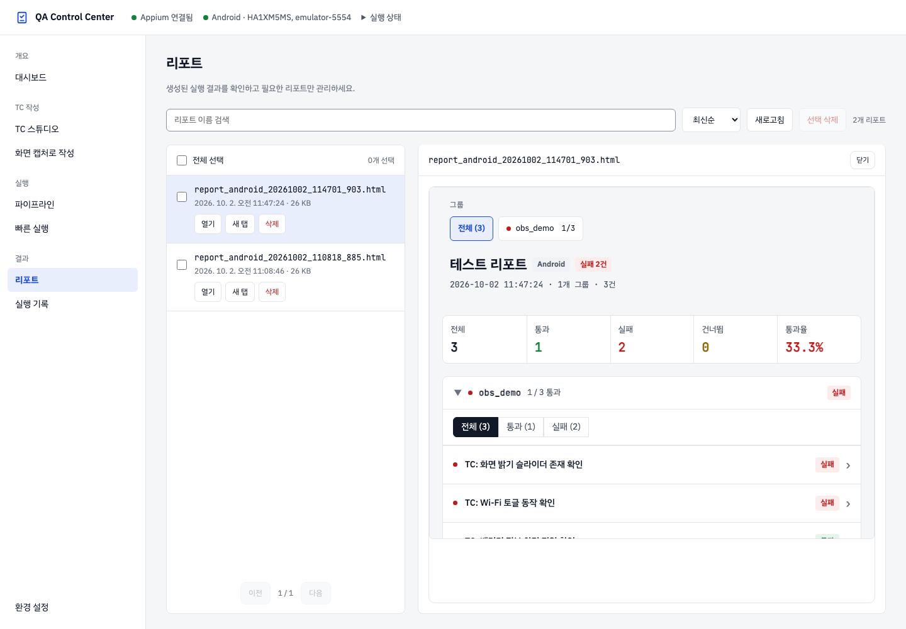
리포트 찾기·열기·선택
- 리포트를 열고 파일명 검색으로 목록을 줄입니다. 대소문자를 구분하지 않습니다.
- 최신순 / 오래된순 / 파일명순으로 정렬합니다. 날짜 정렬은 파일 수정 시각 기준입니다. 목록은 페이지당 8개이며 이전·다음 버튼으로 이동합니다.
- 행 또는 열기를 클릭하면 오른쪽 미리보기가 열립니다. 키보드로 행에 초점을 둔 뒤 Enter·Space로도 열 수 있습니다. 새 탭은 독립된 보고서 주소를 엽니다.
- 체크박스는 삭제 대상 선택에 사용합니다. 체크해도 미리보기는 바뀌지 않습니다. 미리보기 닫기도 파일 삭제가 아닙니다.
- 새 리포트가 보이지 않으면 목록의 새로고침을 누르고 검색어를 지워 확인합니다.
개별·일괄 삭제
행의 삭제는 해당 HTML 리포트 하나를 삭제합니다. 체크박스로 여러 파일을 선택하고 선택 삭제를 누르면 확인 창을 거쳐 삭제합니다. 목록의 전체 선택은 현재 검색에 일치하는 모든 페이지의 리포트를 대상으로 합니다. 검색·페이지를 바꿔도 이전 선택이 남으므로 선택 수를 확인하세요.
삭제한 HTML은 복구할 수 없습니다. 삭제 성공 후 미리보기가 닫힙니다. 리포트 삭제는 생성 테스트나 실행 증거 폴더를 함께 삭제하지 않습니다. 반대로 증거 보존 정리는 리포트 HTML을 삭제하지 않습니다.
보고서 내부의 그룹·TC·증거
- 상단 통계에서 전체·통과·실패·건너뜀 수와 소요 시간을 확인합니다. 그룹 탐색에서 조사할 그룹을 선택합니다. 새 형식 보고서는 첫 그룹이 처음에 열립니다.
- 그룹 제목을 눌러 펼치거나 접습니다. 그룹 안의 전체 / 통과 / 실패 / 건너뜀 필터와 페이지 이동을 사용합니다. 새 형식은 그룹별 페이지당 20개 TC를 표시합니다.
- TC 제목을 눌러 상세를 엽니다. 사전 조건·단계·기대 결과를 읽고 실패 설명을 확인합니다. 전체 오류 보기가 있으면 원문 오류를 펼칩니다.
- 시도 선택과 영상·시스템 로그·스크린샷 링크가 있으면 같은 TC의 이전·마지막 시도를 비교합니다. 증거가 없으면 정책·수집 실패·보존 정리 여부를 확인합니다.
저장 시점이나 사용자 작성 보고서에 따라 내부 기능이 다를 수 있습니다. 예전 보고서에 새 TC 설명·시도 정보가 자동 추가되지는 않습니다. 현재 보고서 헤더에는 대시보드 이동·PDF 버튼이 없습니다. 대시보드로 돌아가려면 원래 탭을 이용하고, 문서를 인쇄하려면 브라우저 인쇄 기능을 사용하세요.
새 리포트는 tests/reports/report_{platform}_{날짜}_{시각}_{식별자}.html에 저장됩니다. 대시보드에서 여는 기존 앱 QA 리포트도 밝은 스타일로 표시하며 원본 실행 내용은 유지합니다.
실행 기록
서버에 저장된 완료 실행을 브라우저와 관계없이 확인합니다. 실행별 통과율과 저장된 실행 요약을 비교합니다.
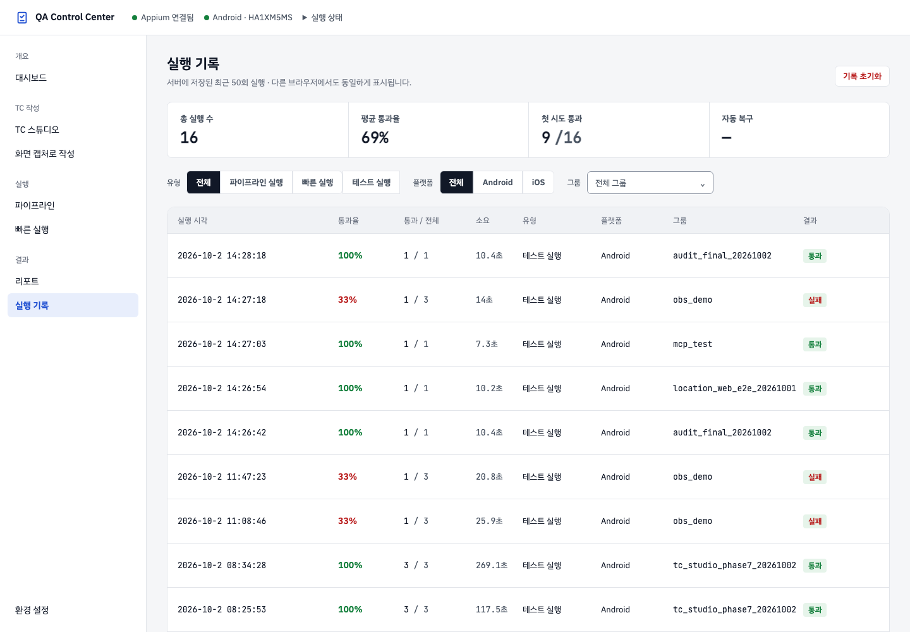
실행 기록의 저장 범위
실행 기록은 서버에 남아 있는 완료된 리포트·실행 증거를 기준으로 최근 50건을 표시합니다. 같은 서버에 접속하면 다른 브라우저나 시크릿 창에서도 같은 기록과 대시보드 추이를 볼 수 있습니다. 기존 리포트도 자동으로 반영하며 하나의 실행에 리포트와 증거가 모두 있어도 중복 집계하지 않습니다. 실행 경로를 확인할 수 없는 이전 기록은 테스트 실행, 확인할 수 없는 소요 시간·첫 시도·복구 정보는 —로 표시합니다.
필터와 통계 읽기
- 실행 유형 전체 / 파이프라인 / 빠른 실행 / 테스트 실행과 플랫폼 전체 / Android / iOS를 선택합니다.
- 그룹 메뉴의 제공된 항목으로 범위를 좁힙니다. 그룹 메뉴에는 서버 실행 기록에 있는 그룹이 표시됩니다. 메뉴를 다시 열거나 목록을 갱신해도 선택한 필터가 유지됩니다.
- 행에서 실행 시각, 통과율, 통과/전체, 소요, 유형, 플랫폼과 그룹을 확인합니다. 정보가 없는 소요 시간은 -로 표시될 수 있습니다.
- 상단 평균 통과율은 저장된 실행별 통과율의 평균입니다. 필터는 행 표시를 바꾸며 상단 통계를 해당 필터로 다시 계산하지 않습니다.
첫 시도 통과와 복구 횟수는 서버 기록에서 확인 가능한 정보 기준입니다. 실제 시도 횟수·복구 효과를 확정할 때는 TC별 증거의 시도 목록을 확인하세요. 빠른 실행 요약에는 실제 자동 복구 횟수가 집계되지 않습니다.
기록 초기화와 브라우저 이동
실행 기록 초기화를 확인하면 모든 브라우저의 실행 기록과 해당 화면 통계를 초기화합니다. 기존 리포트가 남아 있어도 초기화 전 기록을 다시 불러오지 않으며, 이후 완료된 실행부터 표시합니다. 테스트 실행을 중지하거나 HTML 리포트·생성 코드·서버 증거를 삭제하지 않습니다.
왼쪽 메뉴 이동은 브라우저 주소와 방문 기록에 반영됩니다. 뒤로·앞으로로 이전 화면에 돌아갈 수 있고 같은 메뉴를 다시 누르면 데이터를 다시 읽습니다. 브라우저 새로고침은 초기화 명령이 아닙니다. 과거 증거 주소를 다시 열 때는 해당 실행 파일이 남아 있어야 합니다.
환경 설정
Appium과 Android 에뮬레이터·iOS 시뮬레이터·실기기를 준비하는 화면입니다. 실행·작성 화면의 기기 선택과 연결 상태를 함께 확인합니다.
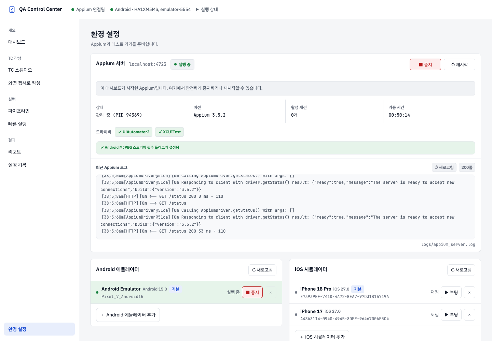
Appium 상태 읽기
| 상태 | 설명과 다음 작업 |
|---|---|
stopped | 서버가 중지되어 있습니다. 환경 설정의 시작 버튼으로 준비합니다. |
starting | 시작 중입니다. 상태가 갱신될 때까지 기다리고 로그를 확인합니다. |
managed | 대시보드가 관리하는 서버입니다. 필요할 때 중지·재시작합니다. |
external | 별도로 실행된 서버입니다. 중지 동작은 현재 실행 중인 서버를 종료하므로 확인 창을 읽습니다. |
error | 기동에 실패했습니다. 로그에서 원인을 확인한 뒤 다시 시작합니다. |
터미널에서 직접 시작한다면 설치된 Android SDK 경로에 맞춰 ANDROID_HOME을 설정합니다. Android 미러링은 서버의 --allow-insecure=uiautomator2:adb_screen_streaming 설정도 확인합니다.
기기 준비와 연결 정책
- Android 에뮬레이터: 등록된 AVD를 시작하고 실행 중 상태를 확인합니다. Appium과 기기는 각각 준비해야 합니다.
- Android 실기기: USB 디버깅을 허용하고 연결을 확인합니다. 필요한 경우 추가 또는 WiFi 페어링을 사용합니다.
- iOS 시뮬레이터: 등록된 시뮬레이터를 시작한 뒤 앱 Bundle ID와 실행 대상을 확인합니다.
- iOS 실기기: 기기 신뢰·연결과 개발 환경을 준비합니다. 필요한 경우 WDA 빌드에서 WebDriverAgent 준비 상태를 확인합니다.
등록 정보는 config/devices.json에서 관리합니다. 기본 기기 표시와 현재 선택된 기기는 구분해서 확인하세요. 실행 화면은 연결된 기기만 선택할 수 있고, 새로고침 후 연결이 끊긴 대상은 선택에서 제외됩니다.
WiFi 페어링·WDA 빌드 대화창은 입력·상태를 확인한 뒤 닫습니다. Escape로도 닫을 수 있습니다. 같은 기기에서 Capture와 테스트를 동시에 실행하지 마세요.
Appium 시작과 로그 확인
- 환경 설정 → Appium 서버에서 주소와 현재 상태를 읽습니다.
- 중지되어 있으면 시작을 누르고 시작 중 표시가 끝날 때까지 기다립니다. 실행 중이면 버전·활성 세션·가동 시간을 확인합니다.
- 사용할 플랫폼의 드라이버가 설치됨으로 표시되는지 확인합니다. 드라이버가 없다면 화면의 설치 안내를 따라 준비한 뒤 상태를 새로고침합니다.
- 기동에 실패하면 오류 메시지와 최근 Appium 로그를 확인합니다. 200줄 버튼으로 더 긴 로그를 열고, 수정한 뒤 다시 시도합니다.
- 설정을 바꾸어 재시작할 때는 실행 중인 Capture·테스트 작업을 먼저 마칩니다. 중지·재시작 확인 창에서 종료되는 서버와 세션 안내를 확인합니다.
external은 다른 터미널 등에서 띄운 Appium입니다. 대시보드의 최근 로그 영역은 관리 중 또는 오류 상태에서 표시됩니다. 외부 서버의 로그는 실행한 터미널에서 확인하세요. 대시보드가 사용하는 로그 경로는 logs/appium_server.log입니다.
에뮬레이터·시뮬레이터 등록과 실행
- Android Studio 또는 Xcode에서 사용할 가상 기기를 먼저 준비합니다.
- 환경 설정의 Android 에뮬레이터 추가 또는 iOS 시뮬레이터 추가를 누릅니다.
- 시스템에 설치된 기기를 선택합니다. 이름·OS 버전이 자동으로 채워지며 iOS는 UDID도 채워집니다. 이미 등록된 항목은 등록 상태로 표시됩니다.
- 등록 후 목록에서 해당 기기의 시작 버튼을 누릅니다. 요청 완료 표시 후 실제 실행·부팅 상태가 반영되는지 확인합니다.
- 작성 또는 실행 화면으로 이동하여 플랫폼과 대상 기기를 다시 확인합니다.
이 화면의 추가는 이미 설치된 가상 기기를 대시보드에 등록하는 기능입니다. 목록이 비어 있으면 가상 기기 설치와 SDK·Xcode 경로를 확인합니다. 가상 기기의 삭제는 대시보드 등록을 제거하며 AVD·시뮬레이터 자체를 삭제하지 않습니다.
실기기와 무선 연결
| 대상 | 준비와 등록 | 확인할 결과 |
|---|---|---|
| Android USB | 기기를 연결하고 USB 디버깅을 허용합니다. Android 실기기 → 추가에서 기기명과 Serial / UDID를 입력하고 필요한 경우 기본 디바이스로 설정합니다. | adb devices와 화면의 연결 상태를 확인합니다. 권한 승인 대기 중이면 기기 화면에서 허용합니다. |
| Android WiFi 페어링 | 기기의 무선 디버깅에서 페어링 코드 화면을 열고 WiFi 페어링에 IP 주소·페어링 포트·6자리 코드를 입력합니다. | 성공 안내 후 실제 연결 상태를 다시 확인합니다. 코드가 만료되면 현재 표시된 값으로 다시 입력합니다. |
| Android WiFi 연결 / 해제 | 설정에 wifi_ip가 있는 경우 표시되는 WiFi ADB 연결·해제 버튼을 사용합니다. | 페어링 성공과 현재 ADB 연결은 구분하여 확인합니다. 기기 주소가 바뀌면 연결 설정을 다시 확인합니다. |
| iOS USB | 기기를 연결하고 컴퓨터 신뢰를 허용합니다. iOS 실기기 → 추가에서 기기명과 UDID를 등록합니다. | 기기 연결 상태와 Appium XCUITest 준비 상태를 확인합니다. |
WDA 빌드: iOS 실기기의 WebDriverAgent를 준비할 때 WDA 빌드를 열어 기기 UDID와 Apple Developer Team ID를 입력한 뒤 빌드 시작을 누릅니다. 빌드 요청이 접수되었다는 안내와 실제 빌드·기기 세션 성공은 구분해서 확인합니다.
기기 삭제는 확인 창에서 선택한 등록을 제거합니다. Capture 세션이나 파이프라인 때문에 변경이 거부되면 해당 작업을 마친 뒤 다시 시도합니다.
설정 파일 안내 사용하기
환경 설정 아래의 세 탭은 파일 형식을 보여 주는 안내입니다. 화면 예시를 읽고 실제 설정 파일은 프로젝트에서 편집합니다.
| 탭 / 파일 | 설정하는 내용 | 변경 후 확인 |
|---|---|---|
config/screens.json | UI 분석이 탐색할 화면, 화면까지 이동할 동작, 대상 플랫폼 | 선택한 앱의 화면·요소 이름과 맞는지 확인하고 필요한 UI 분석을 다시 진행합니다. |
config/test_data.json | 앱 패키지·Activity·Bundle ID·앱 경로와 테스트 입력 데이터 | 기기에 설치된 앱과 값이 맞는지 확인합니다. 테스트용 계정·데이터를 사용하고 예시 값을 실제 앱에 맞게 바꿉니다. |
config/devices.json | Android·iOS 실행 모드, 등록 기기, 버전·식별자·기본값 | 환경 상태를 새로 읽고 실행 화면에서 선택된 기기를 확인합니다. |
Capture 설정에 입력하는 앱 정보와 파이프라인에서 사용하는 설정 파일이 서로 다를 수 있습니다. 작성한 앱과 실행하려는 앱이 같은지 확인하세요. 상세 설치·설정 예시는 온보딩에 있습니다.
자주 묻는 질문
빠른 실행에 폴더가 없거나 구버전 코드 안내가 나옵니다.
TC 스튜디오에서 Markdown을 내보냈는지 확인하고 파이프라인의 코드 생성·린트 검사를 진행하세요. Capture에서 작성했다면 저장 및 생성 결과를 확인합니다. 빠른 실행에서 해당 플랫폼을 선택하고 목록을 다시 읽어 확인합니다.
기기를 선택할 수 없습니다.
환경 설정에서 실제 연결 상태를 확인한 뒤 실행 화면의 기기 새로고침을 누릅니다. 미연결 항목은 비활성화됩니다. Android와 iOS에서 각각 대상 기기가 선택되어 있는지 확인하세요.
Capture 미러링이 멈추거나 세션 충돌이 발생합니다.
같은 플랫폼의 테스트 실행과 충돌한다면 Capture 세션을 종료한 뒤 테스트를 실행합니다. 연결만 끊겼다면 Appium·기기·앱 정보를 확인한 뒤 현재 작업 화면의 세션 재연결을 사용합니다. Android 미러링은 스트리밍 허용 설정과 MJPEG 포트도 확인합니다.
영상이나 스크린샷이 없습니다.
실패 시만 보존 정책에서는 정상 통과 증거가 남지 않을 수 있습니다. 시도별 수집 오류·지원 대상과 보존 여부를 확인합니다. 파일이 없다는 표시를 테스트가 통과했다는 의미로 해석하지 마세요.
최종 통과인데 처음 시도는 실패했습니다.
설정된 재시도 후 통과한 경우입니다. 최종 통과 합계와 함께 시도별 오류·증거를 확인합니다. 실행 증거 화면의 FLAKY 표시는 불안정한 결과를 찾는 데 사용합니다.
다른 브라우저에서 실행 기록이 보이지 않습니다.
같은 서버에 접속했는지 확인하고 실행 기록 메뉴를 다시 눌러 서버 데이터를 조회하세요. 서버 연결 실패 안내가 있으면 연결을 확인합니다. 기록 초기화 이후에는 이전 리포트가 남아 있어도 이전 실행 기록을 다시 표시하지 않습니다.
엑셀을 잘못 가져오거나 파일을 덮어쓸까 걱정됩니다.
엑셀 가져오기 이력에서 해당 작업의 되돌리기를 먼저 확인합니다. 내보내기는 경로·충돌·덮어쓰기 선택을 미리보기에서 확인한 뒤 반영합니다. TC 전체 삭제와 개별 가져오기 되돌리기는 서로 다른 작업입니다.